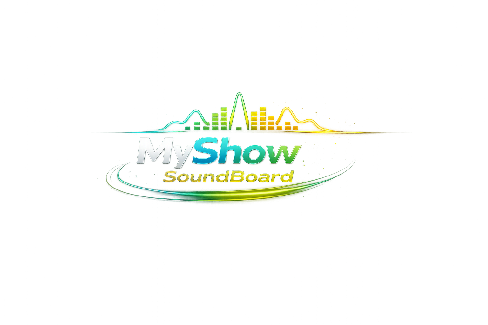

Interfaccia Professionale
Design ottimizzato per uso intensivo in studio. Touch-screen ready, risoluzione full HD e oltre.

Player Jingle Professionale
L'evoluzione professionale del player di jingle per studi radio e TV. MIDI, registrazione indiretta, player musicale. Più potente, più preciso, più affidabile.
Windows • Versione stabile
Pad Preferiti, Palette, Monitor Live, Mixer e controlli globali. Tutto a portata di click.

Tutto ciò che ti serve per una trasmissione professionale, in un'unica applicazione.
Design ottimizzato per uso intensivo in studio. Touch-screen ready, risoluzione full HD e oltre.
Organizza i tuoi jingle per programma o trasmissione. Passa da una palette all'altra con un click.
MP3, WAV, OGG, FLAC e altri formati. Mixaggio manuale e automatico, loop e volume per singolo jingle.
Segnali orari automatici, countdown con avvisi, VU meter di precisione. Controllo totale sul timing.
Playback immediato al click. Nessun ritardo, nessuna attesa. Pronto per l'aria.
Collega controller MIDI, tastiere e pad per triggerare i jingle con un tocco. Controllo hardware integrato.
Registra l'output audio della trasmissione per archivi, podcast o backup. Cattura tutto ciò che va in onda.
Usalo anche come player musicale completo. Riproduci playlist, gestisci la musica di sottofondo o i break.
Installa in pochi minuti. Compatibile con Windows 10 e 11.
My Show Soundboard nasce dall'esperienza diretta negli spettacoli teatrali, musicali ma soprrattutto improvvisazioni. È pensato per professionisti che necessitano di uno strumento affidabile, veloce e intuitivo — senza compromessi.
interfaccia moderna e intuitiva, prestazioni ottimizzate e funzionalità pensate per ambienti broadcast reali. Supporto MIDI per controller esterni, registrazione indiretta dell'output e modalità player musicale per playlist e sottofondo.